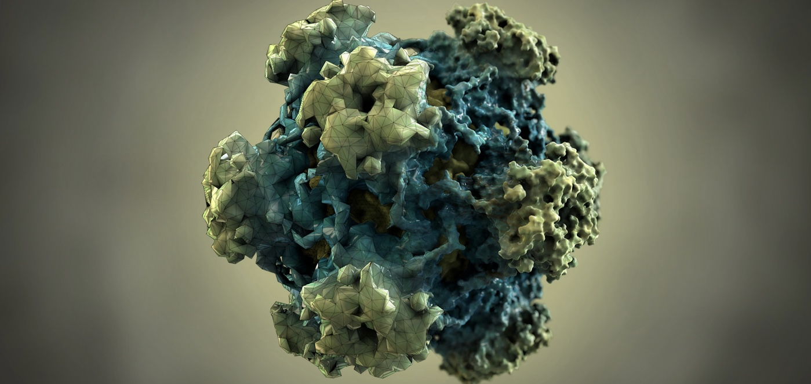

Our lab investigates the physical structure, ecology, and evolution of viruses, combining theoretical biophysics, bioinformatics, and predictive modeling in close collaboration with experimentalists. The lab moved to the Department of Biology at the University of Miami in Fall 2023 after nearly eight years forming part of the Viral Information Institute (VII), the Computational Science Research Center, and the Department of Mathematics & Statistics at San Diego State University.
Navigate our News, Research, Team, and Contact pages for more information.
The Luque lab migrates its website to GitHub December 28, 2023
Publication of pyCapsid in Bioinformatics December 19, 2023
The Luque lab moves to Miami August 15, 2023
Visit our News page to explore more news from the lab.